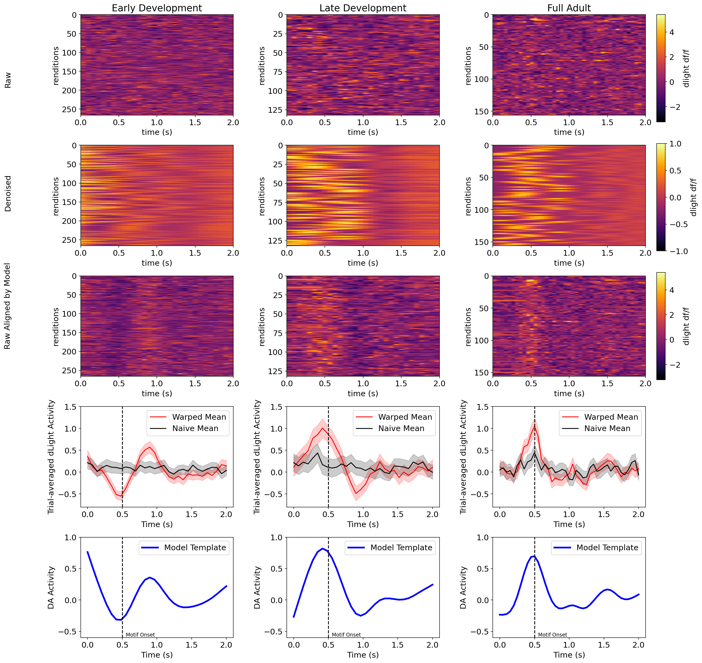

Main Visualization: Raw, Model Estimate, Aligned, Trial Average, and Template
The figure below presents, for each group (Early Development, Late Development, Full Adult), five rows:
- Raw dLight — unaligned fluorescence heatmap (trials × absolute time)
- Model estimate — the model’s reconstruction via
model.predict() - Shift-aligned raw — raw traces reindexed by learned shifts
- Trial average — naive mean (black) vs. shift-aligned mean (red), with 95% CI ribbons
- Model template — the consensus temporal profile (blue)
Note: The adult data (Column 3) has 41 time bins over 2 s (~48.8 ms/bin), whereas the juvenile data have 30 bins over 2 s (~66.7 ms/bin). Time axes are absolute (0 to window duration); a dashed vertical line marks motif onset.
def get_clock_time(data, time_window):
"""Return absolute time array from 0 to time_window (seconds)."""
return np.linspace(0, time_window, data.shape[1])
def plot_heatmap_col(ax, data, vmin, vmax, total_window, title=None, ylabel=None):
"""Plot a trials x time heatmap with inferno colormap."""
hmap_kws = dict(aspect="auto", cmap="inferno",
extent=[0, total_window, data.shape[0], 0])
im = ax.imshow(np.squeeze(data), vmin=vmin, vmax=vmax, **hmap_kws)
ax.set_xlabel("time (s)")
ax.set_ylabel(ylabel or "renditions")
if title:
ax.set_title(title)
return im
def plot_model_estimate_col(ax, model, total_window, n_trials):
"""Plot model reconstruction (model.predict()) with fixed vmin/vmax."""
hmap_kws = dict(aspect="auto", cmap="inferno",
extent=[0, total_window, n_trials, 0])
im = ax.imshow(model.predict().squeeze(),
norm=plt.Normalize(-1, 1), **hmap_kws)
ax.set_xlabel("time (s)")
ax.set_ylabel("renditions")
return im
def plot_trial_average_col(ax, data, model, total_window, motif_onset,
color="r", ylim=(-0.8, 1.5)):
"""Warped mean (colored) + naive mean (black) with 95 % CI ribbons."""
clock = get_clock_time(data, total_window)
warped = model.transform(data)[:, :, 0]
mean_w = warped.mean(axis=0)
ci_w = 1.96 * warped.std(axis=0) / np.sqrt(data.shape[0])
naive = data[:, :, 0]
mean_n = naive.mean(axis=0)
ci_n = 1.96 * naive.std(axis=0) / np.sqrt(data.shape[0])
ax.plot(clock, mean_w, color=color, label="Warped Mean")
ax.fill_between(clock, mean_w - ci_w, mean_w + ci_w, color=color, alpha=0.2)
ax.plot(clock, mean_n, color="k", label="Naive Mean")
ax.fill_between(clock, mean_n - ci_n, mean_n + ci_n, color="k", alpha=0.2)
ax.axvline(x=motif_onset, color="k", linestyle="--")
ax.set_xlabel("Time (s)")
ax.set_ylabel("Trial-averaged dLight Activity")
ax.set_ylim(ylim)
ax.legend()
def plot_template_col(ax, data, model, total_window, motif_onset,
ylim=(-0.6, 1.0)):
"""Model template in blue; motif onset dashed line."""
clock = get_clock_time(data, total_window)
ax.plot(clock, model.template, "-", color="b",
label="Model Template", lw=3)
ax.set_xlabel("Time (s)")
ax.set_ylabel("DA Activity")
ax.set_ylim(ylim)
ax.legend()
ax.axvline(x=motif_onset, color="k", linestyle="--")
ax.text(motif_onset + 0.05, ylim[0], "Motif Onset",
color="k", ha="left", va="bottom", fontsize=9)# Shared colour scale across all three datasets
vmin = min(early_dev.min(), late_dev.min(), raw_adult.min())
vmax = max(early_dev.max(), late_dev.max(), raw_adult.max())
col_titles = ["Early Development", "Late Development", "Full Adult"]
row_titles = ["Raw", "Denoised", "Raw Aligned by Model"]
datasets = [
(early_dev, early_dev_model, JUV_TOTAL_WINDOW, JUV_MOTIF_ONSET, "r"),
(late_dev, late_dev_model, JUV_TOTAL_WINDOW, JUV_MOTIF_ONSET, "r"),
(raw_adult, adult_model, ADULT_TOTAL_WINDOW, ADULT_MOTIF_ONSET, "r"),
]
plt.rcParams.update({"font.size": 14})
fig, axes = plt.subplots(5, 3, figsize=(18, 20))
for col, (data, model, tw, mo, col_color) in enumerate(datasets):
# Row 0: Raw heatmap
im_raw = plot_heatmap_col(axes[0, col], data, vmin, vmax, tw,
title=col_titles[col])
# Row 1: Model estimate (model.predict() with its own normalisation)
im_est = plot_model_estimate_col(axes[1, col], model, tw, data.shape[0])
# Row 2: Shift-aligned raw
im_alg = plot_heatmap_col(axes[2, col], model.transform(data), vmin, vmax, tw)
# Row 3: Trial averages with CI
plot_trial_average_col(axes[3, col], data, model, tw, mo,
color=col_color)
# Row 4: Model template
plot_template_col(axes[4, col], data, model, tw, mo)
# Add colorbars to the right of column 2 (Full Adult) without shrinking column 2
pos0 = axes[0, 2].get_position()
cax0 = fig.add_axes([pos0.x1 + 0.015, pos0.y0, 0.012, pos0.height])
fig.colorbar(im_raw, cax=cax0, label="dlight df/f")
pos1 = axes[1, 2].get_position()
cax1 = fig.add_axes([pos1.x1 + 0.015, pos1.y0, 0.012, pos1.height])
fig.colorbar(im_est, cax=cax1, label="dlight df/f")
pos2 = axes[2, 2].get_position()
cax2 = fig.add_axes([pos2.x1 + 0.015, pos2.y0, 0.012, pos2.height])
fig.colorbar(im_alg, cax=cax2, label="dlight df/f")
# Row labels on the left margin (matching original notebook)
for i, label in enumerate(row_titles):
fig.text(0.02, 0.80 - i * 0.14, label,
ha="left", va="center", fontsize=14, rotation=90)
fig.subplots_adjust(hspace=0.30, wspace=0.35)
fig_path = os.path.join(FIGURE_DIR, "photometry_modeling_main.png")
fig.savefig(fig_path, dpi=150, bbox_inches="tight")
print(f"Saved: {fig_path}")
plt.show()
Each column corresponds to a developmental group (Early, Late, Adult). The vertical dashed line marks motif onset. Warm colors indicate higher dF/F (increased dopamine); cool colors indicate lower dF/F.